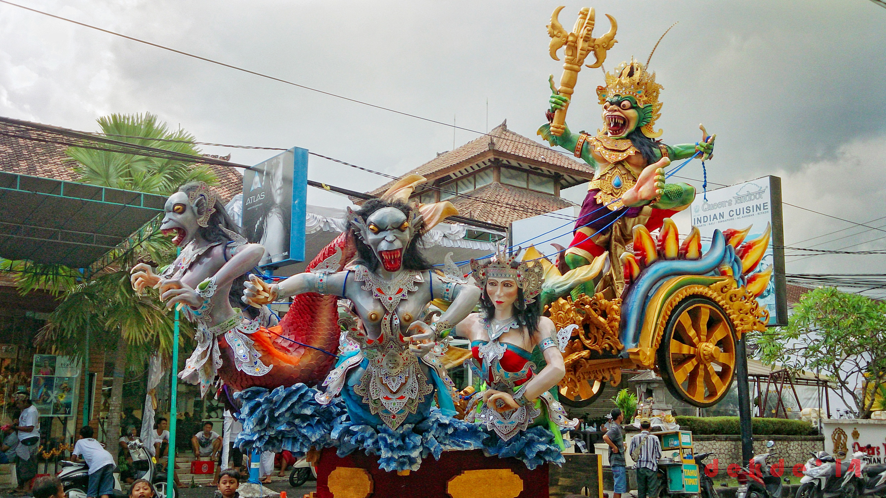

Ogoh-ogoh Unsur Penciptaan Karya Seni
"Ogoh-ogoh sebagai bagian dari wujud visual digolongkan dalam bentuk patung berkualitas seni di Bali, berperan untuk mengkomunikasikan gagasan dan fungsi seni rupa akademik," kata Prof Rai Kalam, Guru Besar Jurusan Lukis Fakultas Seni Rupa dan Desain (FSRD) ISI di Denpasar, Kamis.
Ia mengatakan, ogoh-ogoh yang biasa diusung warga masyarakat dalam menyemarakkan malam pengrupukan, sehari menjelang Hari Suci Nyepi, memiliki peran dan fungsi yang tidak bisa lepas dari aktualitas ritual, yakni sebagai upacara "Bhuta-Yadnya", korban suci bermakna untuk menyucikan keseimbangan alam semesta.
Ogoh-ogoh yang diusung dan diarak keliling desa adat itu diiringi suara gambelan musik tradisional yang bertalu-talu serta tingkah riuh sorak yang mengandung makna mengusir roh-roh jahat dan menetralisasi alam semesta.
Penghayatan ogoh-ogoh sebagai bentuk patung menyajikan simbol-simbol yang bersifat menyeramkan, memiliki karakter, bentuk, gaya, dan warna yang bervariasi menarik menjadi sumber penciptaan sehingga munculnya diversifikasi karya seni lukis akademik dengan ide dan konsep-konsep yang baru.
Prof Rai Kalam yang melakukan penelitian dan pengkajian terhadap ogoh-ogoh itu menambahkan, dalam kurun waktu tiga tahun terakhir, pembuatan ogoh-ogoh di Bali menjelang Hari Suci Nyepi meningkat rata-rata 500-1.000 buah per tahun.
Data terakhir jumlah ogoh-ogoh itu mencapai 4.036 buah, dengan bentuk, ukuran, warna, dan jenis yang sangat beragam. Selain itu, rancang bangun (desain) yang sangat unik dan menarik.
Oleh sebab itu, aktivitas dan penampilan arak-arakan ogoh-ogoh dapat dipandang sebagai karya seni patung yang unik, bahkan dapat disajikan sebagai sumber penciptaan seni lukis akademik.
Pencipta seni lukis akademik yang dimaksud adalah pencipta profesional dalam proses seni lukis berkat adanya pendidikan bidang seni rupa yang sanggup menerima perubahan.
Selain itu, mampu memberikan unsur pendidikan, inovasi, dan mengikuti perkembangan ilmu pengetahuan dan teknologi maupun konsep-konsep dalam mewujudkan ciptaan baru karya seni, ujar Prof Rai Kalam.